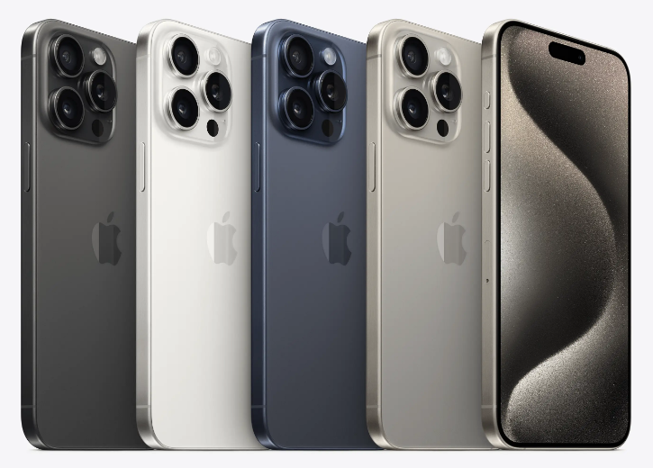

Apple이 2023년 9월 12일에 공개한 iOS 스마트폰. iPhone 시리즈의 17번째 모델이다.

iPhone 14 Pro Max의 후속작으로, 전반적인 디자인은 전작인 iPhone 14 Pro Max와 유사하다. 최초로 Grade-5 티타늄[4]을 케이싱 소재로 사용한 스마트폰이다. 출시 색상은 4개인데, 각 색상의 이름에 티타늄을 강조하여 내추럴 티타늄, 블루 티타늄, 화이트 티타늄, 블랙 티타늄으로 명명되었다. AP는 TSMC 3nm 공정 기반의 A17 Pro를 사용한다. 6코어 CPU와 6코어 GPU, 16코어 Neural Engine으로 구성되어 있다. GPU는 레이 트레이싱 가속 지원이 추가되었다.
5G NR을 지원한다. LTE는 다운로드로 최대 2.5 Gbps를 보장하고 업로드로는 최대 316 Mbps를 보장한다. 근접통신으로 Wi-Fi는 Wi-Fi 1/3/4/6을 2.4 GHz 주파수에서 지원하고 Wi-Fi 2/4/5/6을 5 GHz 주파수에서 지원한다. 이에 더해 6GHz 대역의 Wi-Fi 6E를 지원하는 최초의 iPhone이다. RAM은 LPDDR5 SDRAM 방식이며 iPhone 중에서 최초로 8GB RAM을 탑재한다. 핀당 6400Mbits의 데이터 전송율과, DDR의 3200 MHz 차동 클럭이 적용된다. 내장 메모리는 NVMe 규격의 낸드 플래시를 사용하며 256GB, 512GB, 1TB 옵션으로 구성되어 있다.